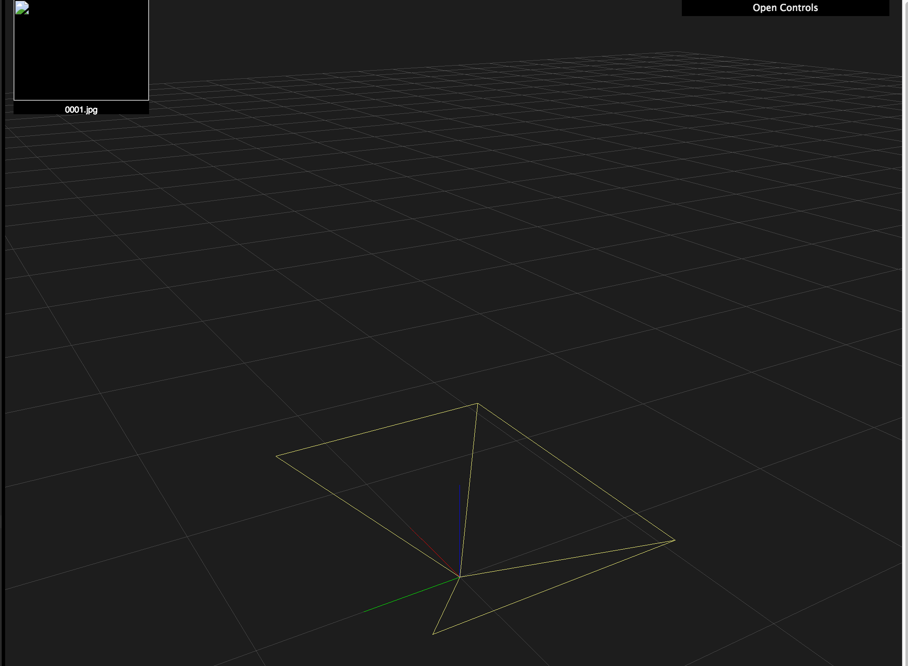

Camera Coordinate System and Conventions¶
Camera¶
The pose of a camera, conceptually, consists of two things:
- Which direction does it face in, i.e. its local coordinate axes
- Where is it, i.e. the position of the camera origin
Local coordinate system of camera¶
These online docs say that, from the POV of a camera (a.k.a. a Shot
object):
- The z-axis points forward
- The y-axis points down
- The x-axis points to the right
I can confirm, after experimentation, that this is accurate. (In the 3D reconstruction viewer, the axes go Red, Green, Blue: x, y, z.)

The OpenSfM Pose class contains a rotation field, representing
the local coordinate system as an axis-angle vector.
- The direction of this 3D vector represents the axis around which to rotate.
- The length of this vector is the angle to rotate around said axis.
Sounds like it makes sense, but when it actually comes to working with code, all the hidden conventions crawl out of the shadows.
First is the obviously unstated unit of angular measurement. In computer maths libraries it’s generally safe to assume everything’s in radians, and it certainly looks like that here.
Next, a “rotation axis” is really just a line. But a vector, even a unit vector, defines a line \(\lambda\mathbf{v}\) with orientation. One direction is “positive scalar”, the opposite is “negative scalar”. Could there be a difference between rotating around \(\mathbf{v}\) and rotating around \(-\mathbf{v}\)?
Look at a clock face-on. Pick the axis from its face to your face. It’s rotating clockwise around this axis. Now turn the clock around to face the opposite direction. Looking through the back of the clock, the hands rotate anticlockwise around the negative of the original axis. So rotating by \(\theta\) around \(-\mathbf{v}\) is the same as rotating \(-\theta\) around \(\mathbf{v}\).
Even if we know that two representations are opposite, this still doesn’t tell us which is which. What is a “rotation around the z-axis”? This sounds like asking whether each axis is clockwise or anticlockwise, but even this depends on which way you’re looking…
Instead, the real question being asked is: Does a rotation by a small positive angle, around the positive z axis, rotate in the x-to-y direction, or the y-to-x direction? And likewise for the other axes.
To find out, I set the rotation vectors to rotate 1 radian around each of the axes. Results are:
“Rotate around Z” is Y-to-X
With pose.rotation = [0, 0, 1]:

“Rotate around Y” is X-to-Z
With pose.rotation = [0, 1, 0]:

“Rotate around X” is Z-to-Y
With pose.rotation = [1, 0, 0]:

It basically works like this (apologies for ASCII art):
Z ----+
/ | |
/ | V
^ |_____Y
| / /
| / /
X <-----+
Where is the camera?¶
Conceptually, this is a simple translation, in world coordinates, to the camera’s origin position.
OpenSfM, however, chooses not to store the “camera origin” in
Pose objects. Instead, it stores the camera coordinates of the
world origin in the translation field.
These obviously depend on the position and, in particular, rotation
of the camera. They are automatically calculated by the
pose.set_origin(origin) method, using the current
pose.rotation.
Because of this dependency, if the camera turns around, the
translation will need updating. But pose.set_rotation_matrix()
does not do this. So you should never call set_origin()
before set_rotation_matrix(). Only set the origin afterwards.
The case where you only want to change the rotation, while keeping the
position the same, is a bit subtle. You will have to manually update
pose.translation after setting the rotation, but to what? You can’t
call get_origin() after updating the rotation, because this will
calculate the origin from translation using the new rotation
instead of the old one. The translation value only makes sense the
coordinate system that set it. It must be kept in sync with
rotation, something that seems to have been overlooked in the version
at the time of writing.
Solution to safely set pose rotation:
org = pose.get_origin() # save where the camera actually is
pose.set_rotation_matrix(R) # set the rotation
pose.set_origin(org) # update the translation property accordingly...